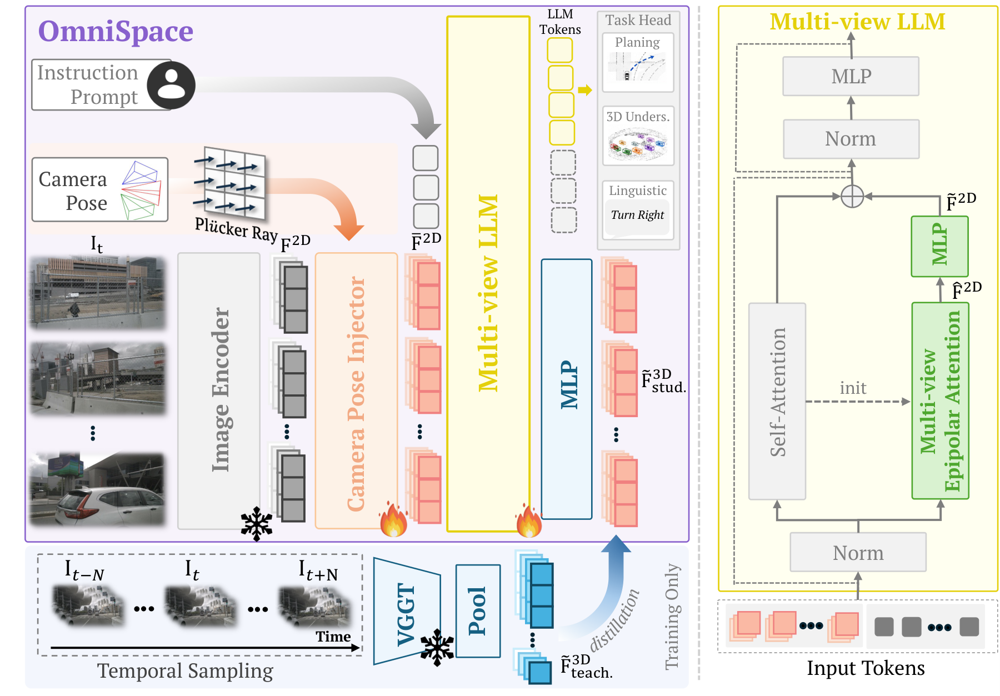

OmniSpaceEfficient Geometry Awareness for
Autonomous Vehicles MLLMs
* Equal contribution
Abstract
Multimodal Large Language Models (MLLMs) have achieved remarkable performance on 2D visual tasks, yet enhancing their spatial intelligence for real-world applications such as Autonomous Vehicles (AV) remains an open challenge. Existing geometry-aware MLLMs typically rely on auxiliary 3D models at inference time, introducing pipeline complexity and the risk of cascading failures. In this paper, we present OmniSpace, a backbone-agnostic framework for geometry-aware spatial reasoning from purely camera-only observations. Motivated by our finding that current MLLMs are bottlenecked by weak cross-view correspondence and depth estimation, OmniSpace introduces a Camera Pose Injector, a Multi-view Epipolar Attention module, and a 3D Geometric Distillation objective that jointly address these two limitations by transferring geometric knowledge into the model. Extensive experiments show that OmniSpace surpasses existing methods on planning benchmarks (nuScenes, Bench2Drive), risk detection (nuInstruct), language (OmniDrive), and generalization (DriveBench).
Method

Experiments
Open-loop planning results on nuScenes. Best results are bold; runners-up are underlined.
| Method | LLM | Params | FPS ↑ | L2 ↓ | Collision (%) ↓ | Intersection (%) ↓ | |||||||||
|---|---|---|---|---|---|---|---|---|---|---|---|---|---|---|---|
| 1s | 2s | 3s | Avg. | 1s | 2s | 3s | Avg. | 1s | 2s | 3s | Avg. | ||||
| Traditional methods | |||||||||||||||
| UniAD | — | 125M | 1.8 | 0.20 | 0.42 | 0.75 | 0.46 | 0.02 | 0.25 | 0.84 | 0.37 | 0.20 | 1.33 | 3.24 | 1.59 |
| VAD-Base | — | 58M | 4.5 | 0.17 | 0.34 | 0.60 | 0.37 | 0.04 | 0.27 | 0.67 | 0.33 | 0.21 | 2.13 | 5.06 | 2.47 |
| BEV-Planner | — | — | — | 0.16 | 0.32 | 0.57 | 0.35 | 0.00 | 0.29 | 0.73 | 0.34 | 0.35 | 2.62 | 6.51 | 3.16 |
| ST-P3 | — | 11M | — | 1.59 | 2.64 | 3.73 | 2.65 | 0.69 | 3.62 | 8.39 | 4.23 | 2.53 | 8.17 | 14.40 | 8.37 |
| 2D MLLM | |||||||||||||||
| Baseline | Qwen2.5-VL 7B | 7.75B | 0.42 | 0.15 | 0.33 | 0.62 | 0.37 | 0.00 | 0.18 | 0.76 | 0.31 | 0.94 | 3.09 | 6.76 | 3.59 |
| Baseline | InternVL3.5 4B | 4.73B | 0.47 | 0.15 | 0.33 | 0.62 | 0.37 | 0.00 | 0.18 | 0.88 | 0.35 | 0.78 | 3.03 | 6.95 | 3.59 |
| Baseline | Qwen3-VL 4B | 4.4B | 0.44 | 0.15 | 0.32 | 0.61 | 0.36 | 0.00 | 0.14 | 0.96 | 0.36 | 0.57 | 2.54 | 6.04 | 3.05 |
| EMMA | — | — | — | 0.14 | 0.29 | 0.54 | 0.32 | — | — | — | — | — | — | — | — |
| DriveVLM | Qwen-VL | 9.6B | — | 0.18 | 0.34 | 0.68 | 0.40 | 0.10 | 0.22 | 0.45 | 0.27 | — | — | — | — |
| 2D MLLM + test-time 3D model | |||||||||||||||
| ORION | Vicuna-7B-v1.5 | 7.55B | — | 0.17 | 0.31 | 0.55 | 0.34 | 0.05 | 0.25 | 0.80 | 0.37 | — | — | — | — |
| OmniDrive | LLaVA-7B | 7.2B | 0.27 | 0.14 | 0.29 | 0.55 | 0.33 | 0.00 | 0.13 | 0.78 | 0.30 | 0.56 | 2.48 | 5.96 | 3.00 |
| VGGDrive | Qwen2.5-VL 7B | 8.5B | 0.03 | 0.14 | 0.28 | 0.51 | 0.31 | 0.02 | 0.10 | 0.55 | 0.22 | 0.63 | 2.27 | 4.02 | 2.31 |
| SpaceDrive | Qwen2.5-VL 7B | 8.7B | 0.25 | 0.15 | 0.29 | 0.51 | 0.32 | 0.04 | 0.18 | 0.49 | 0.23 | 0.22 | 0.80 | 2.79 | 1.27 |
| 2D MLLM + train-time 3D model | |||||||||||||||
| OmniSpace | Qwen2.5-VL 7B | 7.79B | 0.40 | 0.12 | 0.25 | 0.47 | 0.28 | 0.00 | 0.10 | 0.57 | 0.22 | 0.32 | 1.22 | 2.22 | 1.25 |
| OmniSpace | InternVL3.5 4B | 4.77B | 0.46 | 0.13 | 0.26 | 0.50 | 0.30 | 0.01 | 0.10 | 0.50 | 0.20 | 0.31 | 1.88 | 2.32 | 1.50 |
| OmniSpace | Qwen3-VL 4B | 4.44B | 0.42 | 0.12 | 0.26 | 0.45 | 0.28 | 0.02 | 0.14 | 0.42 | 0.19 | 0.25 | 1.20 | 2.36 | 1.27 |
Acknowledgments
This material is based upon work supported by the National Science Foundation under Award No. #2443877 (NSF CAREER), #2223793 (NSF EFRI BRAID), #2445877 (NSF E-RISE), #R01CA277739-04 (NIH). We also acknowledge the Arkansas High-Performance Computing Center for providing GPUs. Duy Minh Ho Nguyen contributed to this research under support from the Lower Saxony Ministry of Science and Culture (MWK) in the zukunft.niedersachsen program, the Endowed Chair of AAI at the University of Oldenburg, and the Federal Ministry of Research, Technology and Space (BMFTR) under grant numbers 16IW24006 (NoIDLEChatGPT) and 16IW26002 (AMENABLE).
BibTeX
Download .bib@article{vo2026omnispace,
title={OmniSpace: Efficient Geometry Awareness for Autonomous Vehicles MLLMs},
author={Vo, Hao and Nguyen, Phu Loc and Vo, Khoa and Tran, Sieu and Nguyen, Duc Minh and Cuong, Ngo Xuan and Bui, Nghi DQ and Nguyen, Anh and Nguyen, Duy Minh Ho and Le, Ngan},
journal={arXiv preprint arXiv:2606.22617},
year={2026}
}